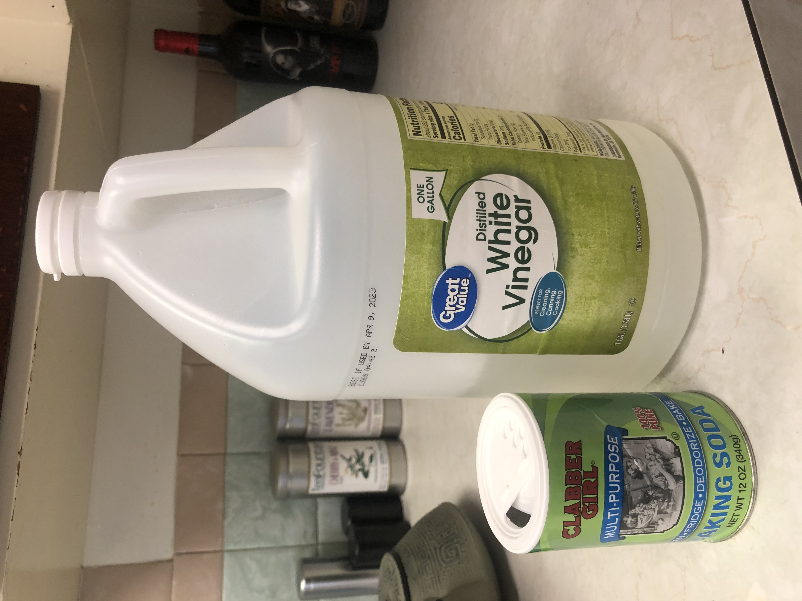
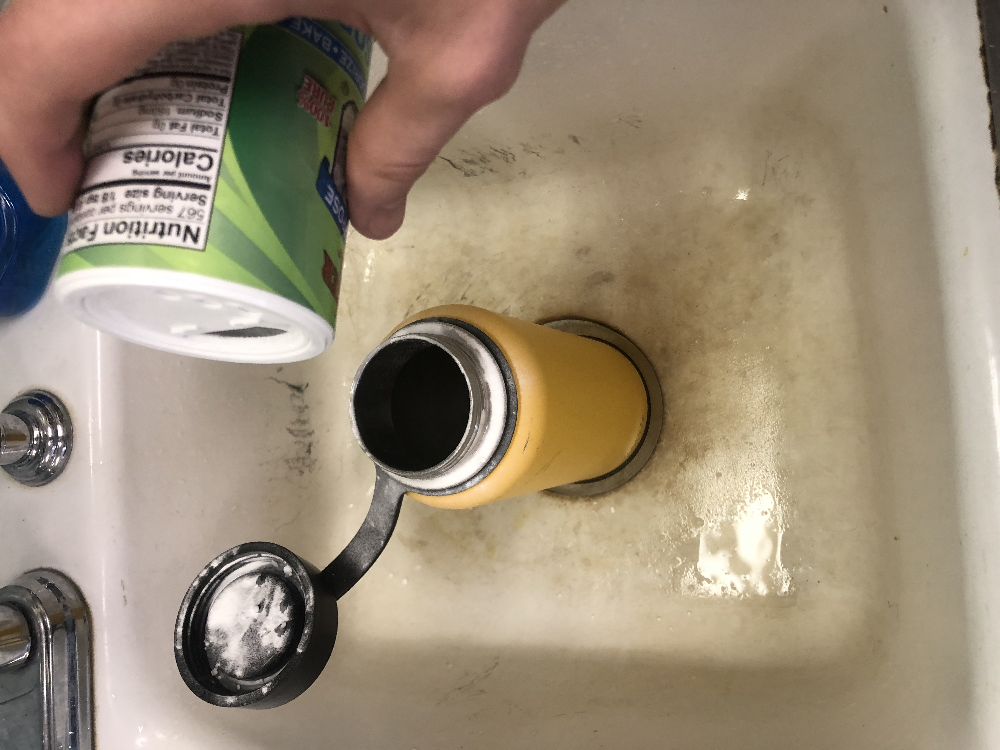
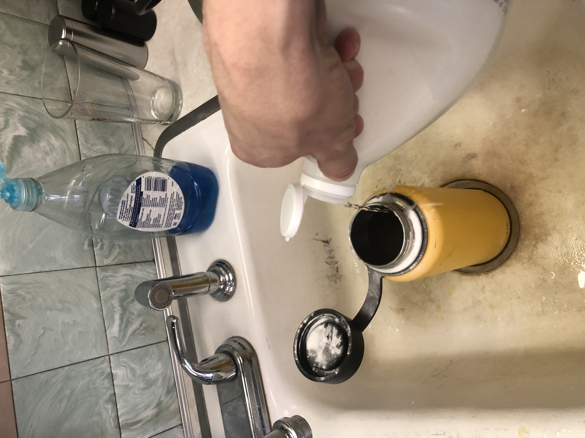
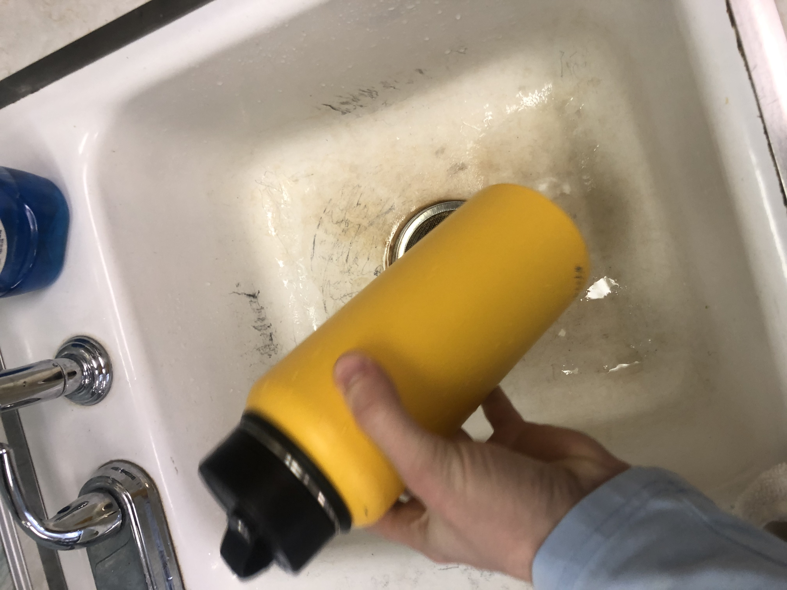
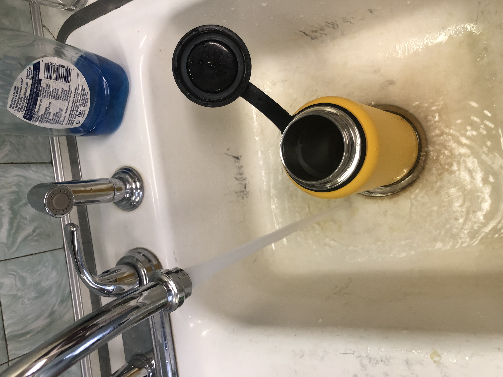
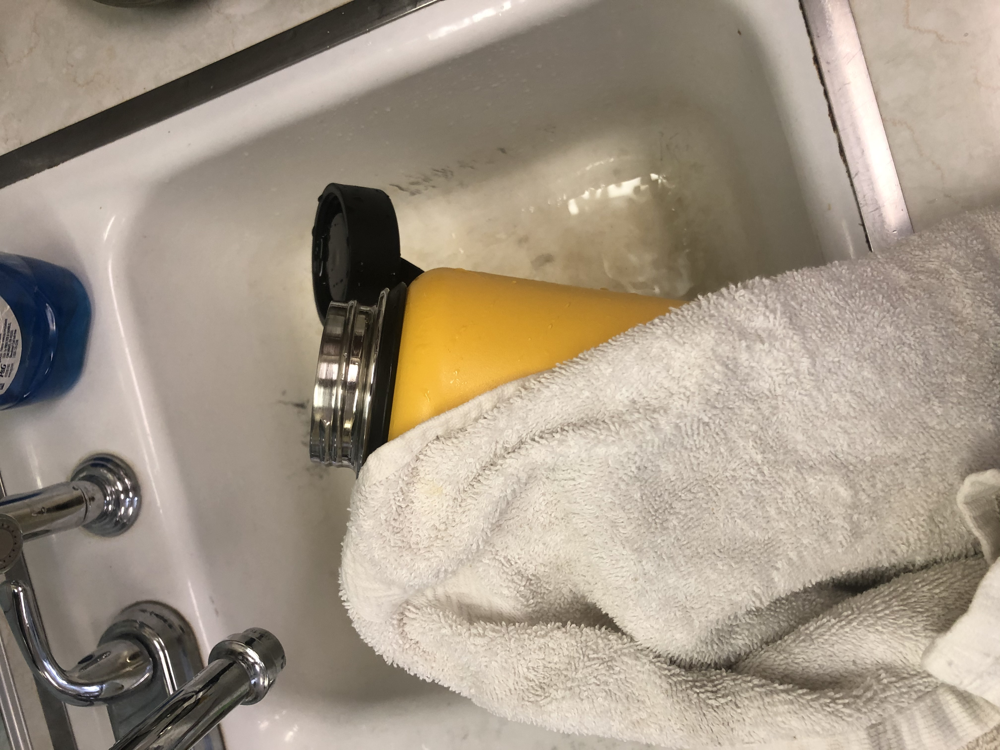
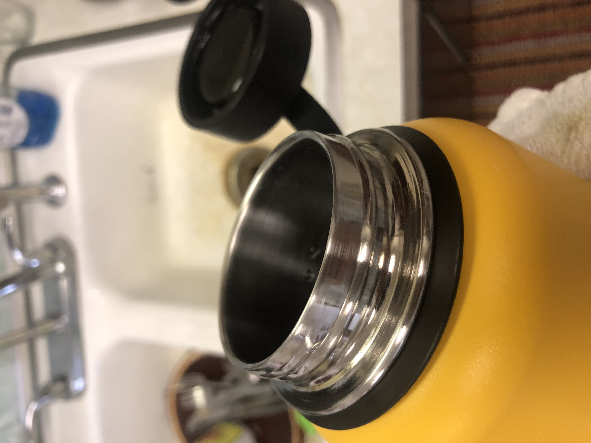

How to Clean your water bottle
materials needed
baking soda
vinegar
water bottle

Step 1
place bottle above drain & coat water bottle with baking soda as best as possible
making sure to get around the drinking rim and inside the cap

Step 2
pour vinegar over all area of bottle and admire the fizzling reaction

Step 3
cover bottle and shake vigorously with baking soda & vinegar mixture inside

Step 4
carefully unscrew the cap as there will be pressure built up by the
baking soda & vinegar, and dump contents down the drain. Now rinse with warm water

Step 5
once rinsed clean rim, cap, and inside of bottle with
a clean towel or disposable rag

Step 6 Final Step
all clean! give it one more rinse with either cold or warm water
and your water bottle is as good as new!
